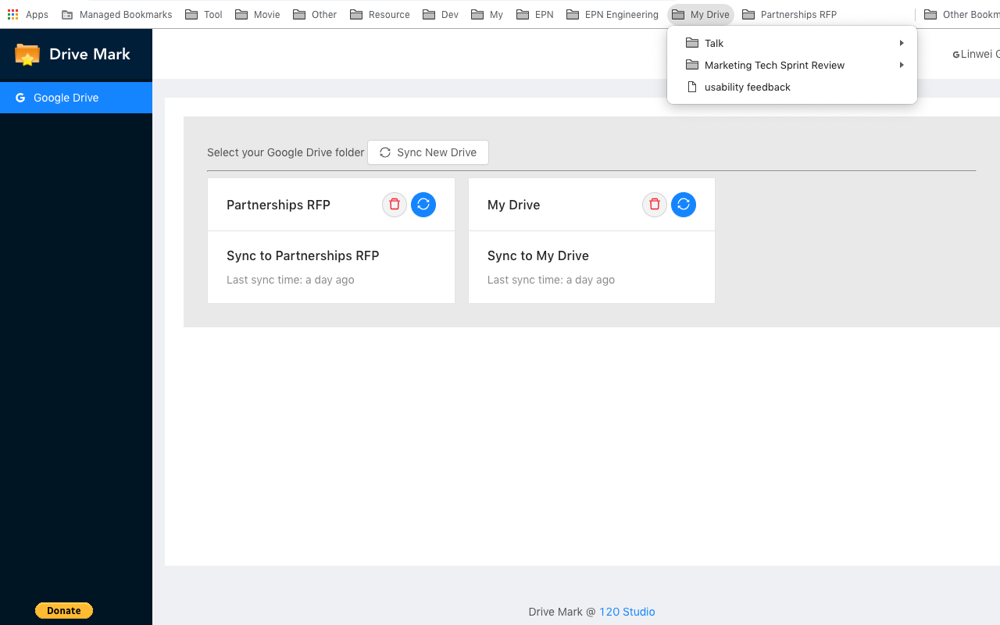

Home
Drive Bookmark
Extension for Instagram
Drive Bookmark
A free chrome extension to map your Google drive to bookmark!
Install
Support
Drive Bookmark
Map your Google Drive to your bookmark. You can easily access for your drive files including team folder via bookmark.
How many times did you switch different Google drives to find your file?
How many times did you repeatly search for the same file?
How messy your bookmark is without any organize?
One click to map your Google drive to your bookmark.

$2 to support us